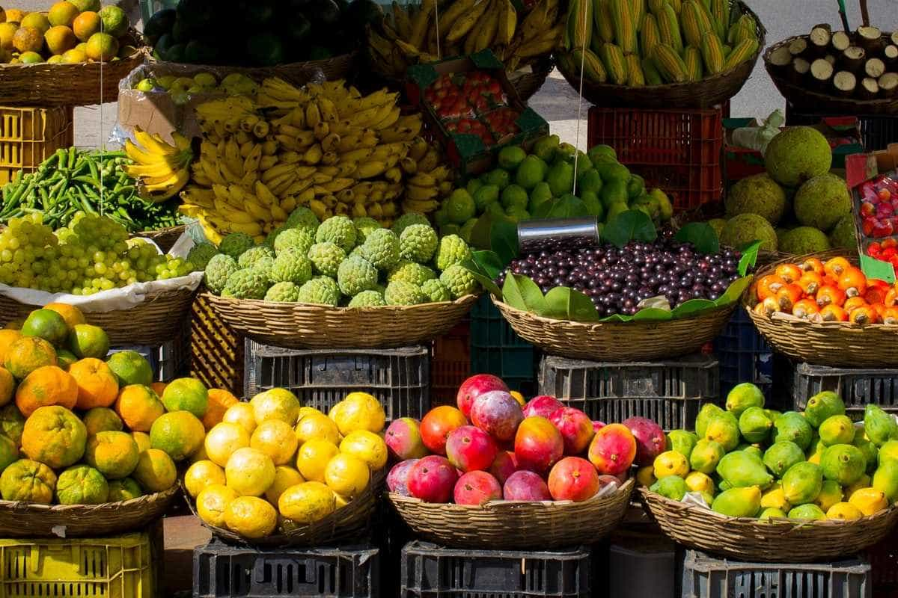

- Como a cidade contribui com o campo
A cidade contribui com o campo ao oferecer acesso a serviços de:
- Saúde
- Educação
- Tecnologia
- Mercados consumidores
Essa relação fortalece a produção rural, moderniza técnicas agrícolas e amplia as oportunidades para os moradores do meio rural.

- Como o campo contribui com a cidade
O campo contribui com a cidade fornecendo:
- Alimentos
- Matérias-primas
- Preservação dos recursos naturais
Essa relação é essencial para o abastecimento urbano e o equilíbrio ambiental, além de manter o bom comércio entre os dois, e ainda ajudar na qualidade de vida de quem vive nas cidades
